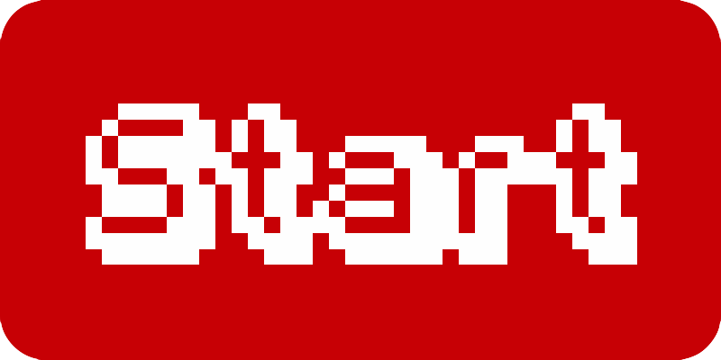
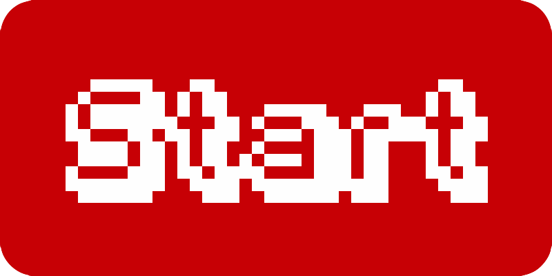

Is an NES emulator.
But it's only available for mobile devices
The original webNES was built at PennApps Spring 2014 by @conradev, @jawerty, @bogidon and @elklein96
webNES CE is built off of JSNES made by @bfirsh. If you're on a desktop device, use this instead!
 
